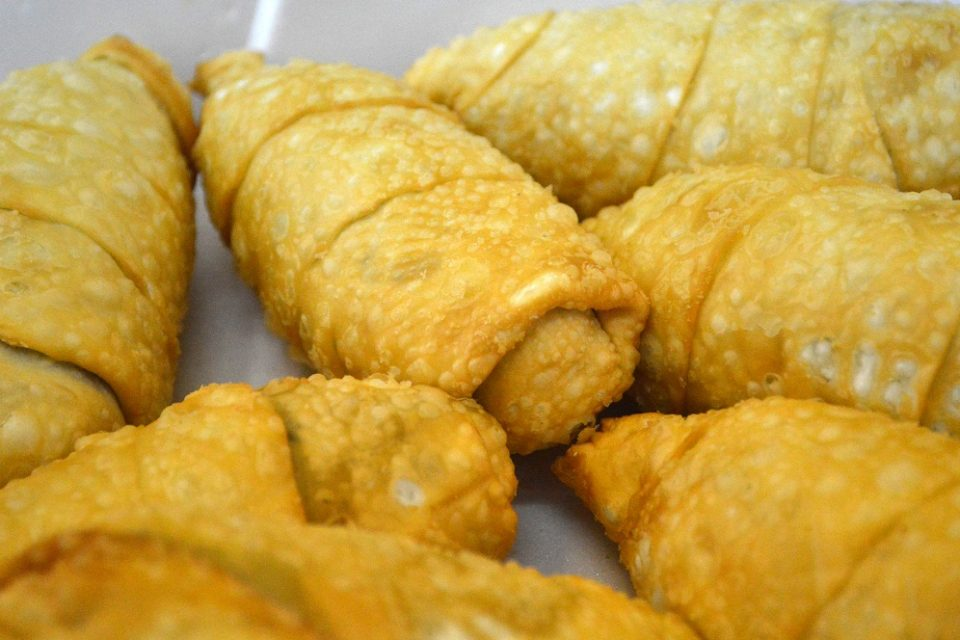

Coxinha de Farofa da Lapa

Descrição
Um prato com muita história, tipico lapeano, patrimônio imaterial, que encanta todos os paladares dos turistas que na Lapa chegam.
Ingredientes
- 2kg de frango desfiado
- 1 cebola
- 4 tomates (bem maduros)
- 800g de farinha de milho
- Massa pronta de pastel
- Cheiro verde à gosto
Modo de Preparo
- Comece ralando a cebola e o tomate pra fazer o molho e coloque na panela.
- Coe o caldo que sobrou do cozimento do frango e jogue no molho.
- Coloque o frango desfiado no molho.
- Após ferver bem, adicione a farinha.
- No fim, adicione o cheiro verde.
- Corte em tiras a massa de pastel.
- Enrole a massa de pastel, cortada em tiras, no recheio. (A massa deve estar quente e o cozinheiro deve estar com a mão molhada pra facilitar o enrolamento e não queimar a mão).
- Após a massa estar enrolada no recheio, coloque em óleo quente, frite-a e saboreie-se.